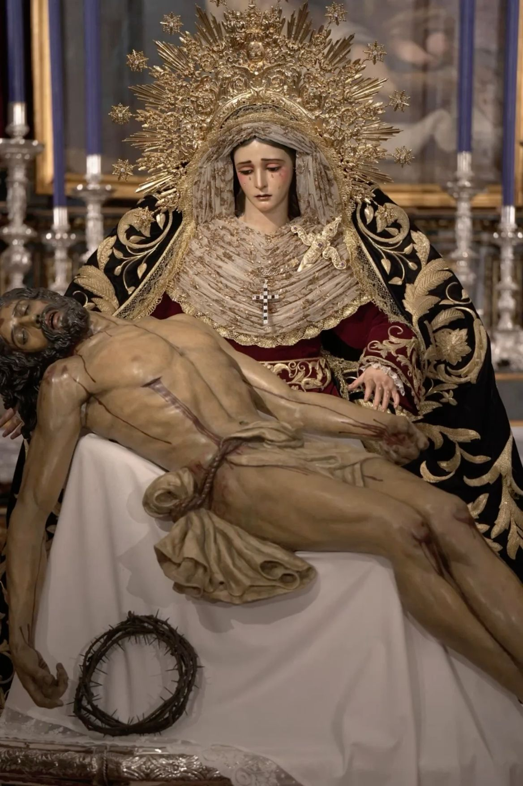
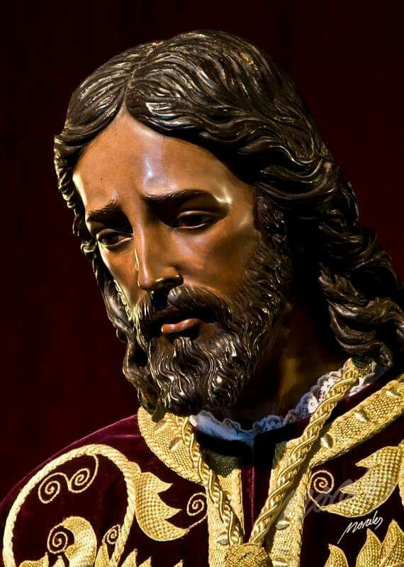

SALA III
MIÉRCOLES SANTO

CRISTO DE BURGOS
El Santísimo Cristo de Burgos, una de las imágenes más veneradas de la Semana Santa de Sevilla, protagonista del Miércoles Santo.

EL BARATILLO
La Hermandad del Baratillo, una de las grandes protagonistas del Miércoles Santo sevillano, une tradición, devoción y arte en el corazón del Arenal.

LOS PANADEROS
La Hermandad de Los Panaderos, una de las grandes protagonistas del Miércoles Santo sevillano, representa una de las tradiciones más antiguas de la Semana Santa.

LAS SIETE PALABRAS
La Hermandad de las Siete Palabras, una de las corporaciones históricas de la Semana Santa de Sevilla, representa la solemnidad y la tradición del Miércoles Santo sevillano.